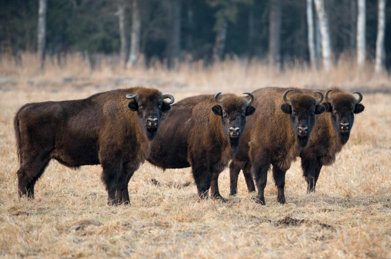

Zimbrul
In Romania
Probabil cea mai cunoscută specie pe cale de dispariţie din România, zimbrul este o specie de bizon şi reprezintă cel mai masiv animal erbivor de pe uscat care trăieşte în Europa. Ei au fost reintroduşi în România în 1958, când două exemplare au fost aduse din Polonia. În 2012, cinci zimbri au fost eliberaţi în Parcul Naţional Dragoş Vodă. În prezent, zimbrii trăiesc în cinci locuri din ţară, cel mai cunoscut fiind rezervaţia naturală de la Haţeg.
Descriere
Zimbrul este cel mai mare mamifer terestru din Europa; greutatea unui adult variază între 530-840 kg la exemplarele sălbatice. Femelele sunt mai mici, cu o greutate de 320-540 kg. De asemenea, masculii au capul mai greu și greabănul mai înalt decât femelele. Ambii au coarne și le utilizează în lupte, deși diferă în grosime și lățime: masculul are coarnele mai groase și se află la o distanță mai mare una de cealaltă.
| Caracteristi genereale | |
|---|---|
 |
Populatie in lume |
| 5000 | |
 |
Inaltime |
| 190 cm | |
 |
Greutate |
| 300 la 920 kg | |
 |
Habitat |
| Se găsesc în zone protejate din păduri din estul Europei | |
| Mai multe detali aici | |